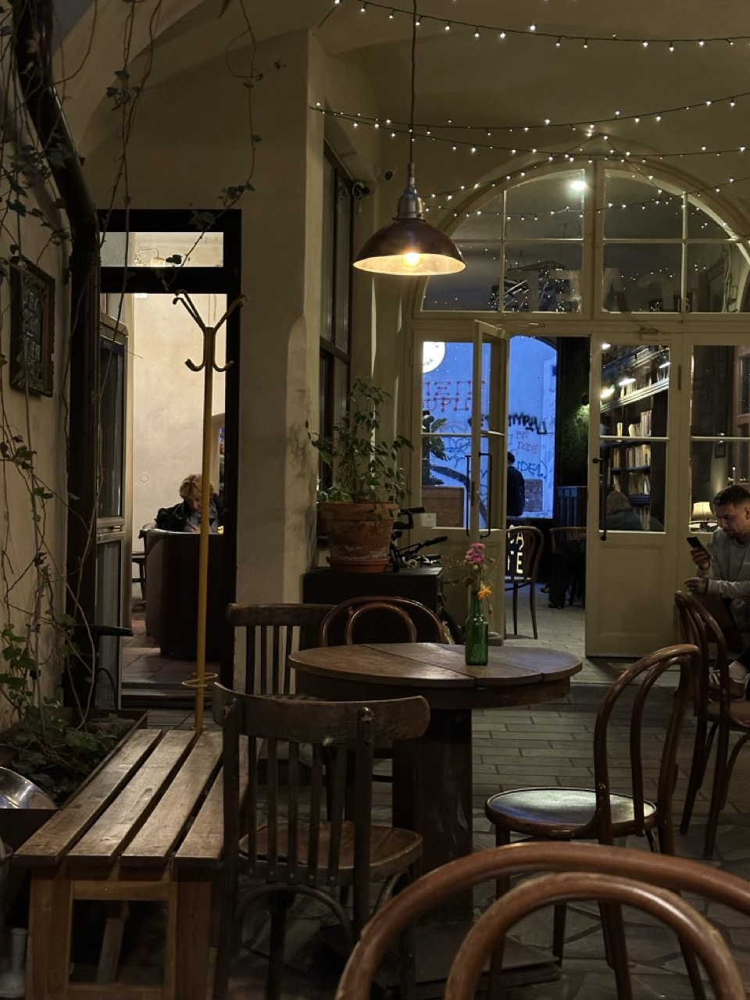
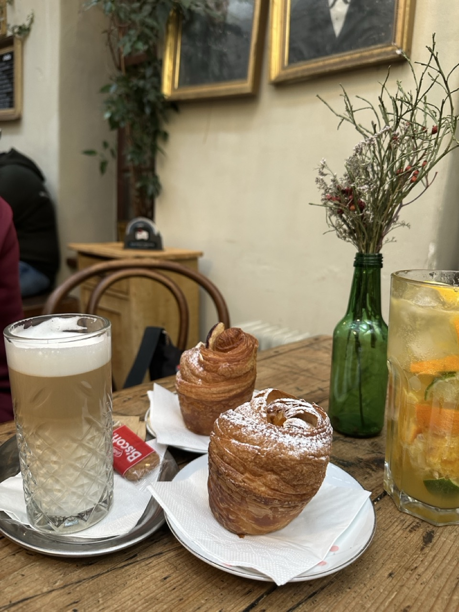
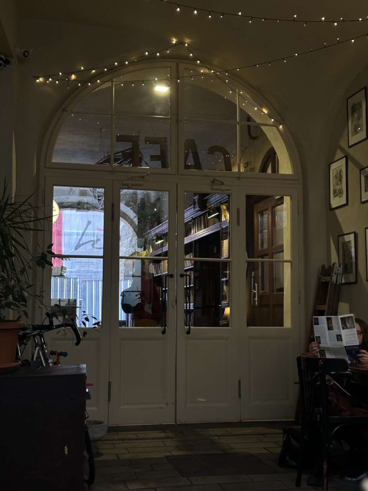

Cafe Club Míšeňská
Cafe Club Míšeňská leží jen pár kroků od Karlova mostu, a přesto působí jako úplně jiný svět. Schovaná v klidné malostranské uličce nabízí příjemný únik před davy turistů a má nezaměnitelnou, lehce bohémskou vintage atmosféru.
Co stojí za ochutnání
Kromě poctivé kávy a příjemného posezení v křeslech mě tady baví hlavně klid, který je v centru Prahy vzácný. Je to ideální místo na dlouhé povídání s kamarády, čtení knížky nebo jen chvíli odpočinku po procházce po Malé Straně.
Fotogalerie


